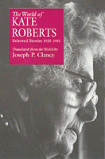

The life and fiction of a modern Welsh writer
The life and fiction of a modern Welsh writer


 The life and fiction of a modern Welsh writer
The life and fiction of a modern Welsh writer

|  |
The World of Kate RobertsSelected Stories, 1925-1981translated by Joseph P. Clancypaper EAN: 978-0-87722-795-3 (ISBN: 0-87722-795-0) |
Publishers Weekly Best Book, 1991
Kate Roberts (1891-1985) was the foremost twentieth-century prose writer in the Welsh language. She produced a considerable body of fiction, seven novels and novellas and nine collections of short stories, and was active in the Welsh Nationalist Party as a publisher and a literary and political journalist. A contemporary of D. H. Lawrence, Katherine Mansfield, and Sherwood Anderson, she created the modern form of the short story in Welsh, and through six decades of writing earned a place with this century's masters of the genre.
The World of Kate Roberts offers in English a large selection of stories, many previously, untranslated, that span her long writing career. Joseph P. Clancy's translations convey the intensity, the insight, and the distinctive prose style with which this Welsh-language writer illuminates her characters' often heroic ordinary lives. This book contains twenty-seven short stories, two short novels, and "Tea in the Heather," eight linked stories of childhood in North Wales at the turn of the century. Excerpts from her autobiography provide background for the non-Welsh reader and an Introduction presents Kate Roberts' life and work largely through her own words.
The experience of poverty is the vital center of Kate Roberts' fiction: material poverty in the slate-quarrying villages of North Wales and the coal-mining communities in the south at the turn of the century and during the Depression; and the cultural, moral, and spiritual poverty of contemporary life in a small town. This poverty defines the experiences and tests the resources of her characters. Her concern was to record, to examine, and to celebrate without sentimentality the life of the close-knit society in which she had grown up. What is most characteristically Welsh in Roberts' vision is that fellowship, membership in a community, is essential to the realization of the human self. "We never saw riches," observed Kate Roberts, "but we had riches that no one can take away from us, the riches of a language and a culture."
"This new collection of works by Roberts (1891-1985), presented here as the foremost stylist of the short story in the Welsh language, contains two novellas and 35 short stories, many of them previously untranslated. Roberts's vocabulary is unadorned, befitting her subject matter, a world where coal and quarry dust hang heavy in the air. Her stories depict a Wales of cultural and spiritual, as well as economic, poverty. A widow tries to reconstruct her life, a quarryman dying of cancer is unable to tell his wife of his feelings for her. Perhaps the best piece is the novella 'Dark Tonight,' dealing with the mental breakdown and recovery of a minister's wife. Also outstanding is 'Protest March,' in which a woman, protesting for reform of the welfare system, despairs that anything can be changed even before the demonstration is over. Yet all is not unrelentingly grim. Roberts captures the rhythms of Welsh life with its harvests, fairs, literary meetings and the Christmas eulogized by countryman Dylan Thomas, though seen here without sentimentality. Selections from Roberts's autobiography, plus an introduction and notes by Clancy, orient readers to the author's life and work."
—Publishers Weekly
Introduction
The Pronunciation of Welsh
Part I: Autobiography (1960)
Pictures
Letters
Part II: Stories (1925-1937)
The Letter
Provoking
The Widow
Old Age
The Ruts of Life
The Loss
Between Two Pieces of Toffee
Sisters
The Victory of Alaw Jim
The Quilt
Red-Letter Day
The Last Payment
November Fair
The Condemned
Protest March
Part III: Gossip Row (1949)
Part IV: Tea in the Heather (1959)
Grief
The Spout
Death of a Story
Tea in the Heather
A Visitor for Tea
Escape to London
Becoming Strangers
The Card Christmas
Part V: Dark Tonight (1962)
Part VI: Stories (1964-1981)
Cats at an Auction
Buying a Doll
Flowers
The Journey
The Battle of Christmas
Two Old Men
The Treasure
Family
Hope
Return
Tomorrow and Tomorrow
Oh! Winni! Winni!
Notes
Joseph P. Clancy, a poet and a leading translator from the Welsh, is Professor Emeritus of English Literature and Theatre Arts at Marymount Manhattan College.
General Interest
Literature and Drama
Border Lines: Works in Translation, edited by Lawrence Venuti.
Border Lines, edited by Lawrence Venuti, is a translation series designed to make important foreign literary works available to an English-language audience and to recognize and support the role of translation in promoting cultural diversity. The books will be primarily fiction and poetry, but the series will also consider drama and non-fiction genres like memoirs and criticism. Preference will be given to foreign writers who have never been translated into English, and to foreign literatures that are underrepresented in Anglo-American culture because of aesthetic, cultural, or political differences.
© 2015 Temple University. All Rights Reserved. This page: http://www.temple.edu/tempress/titles/803_reg.html.